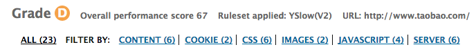
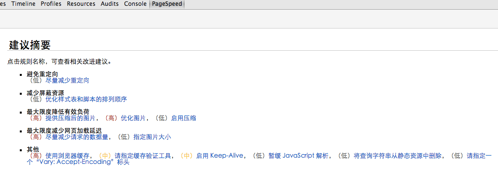
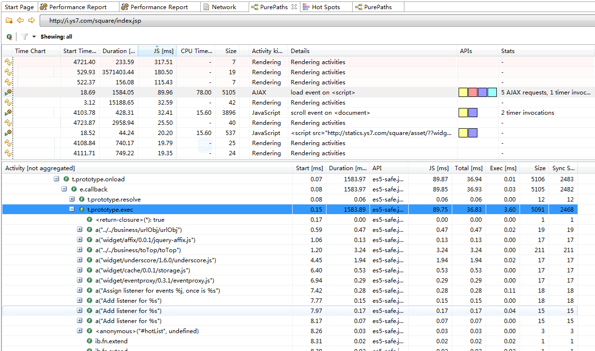
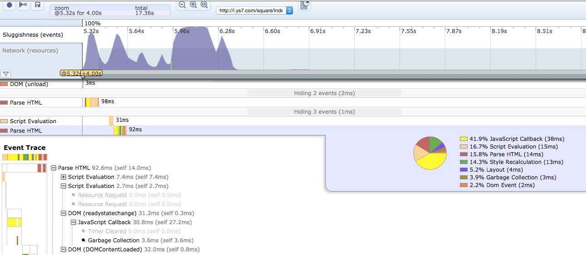
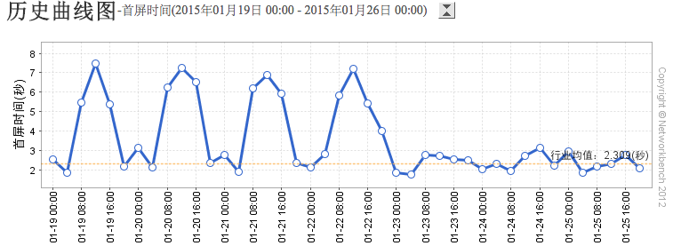
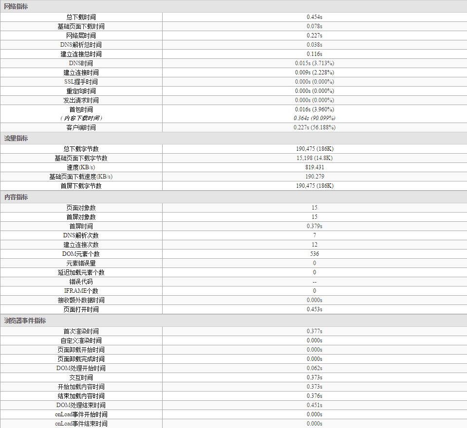

性能优化手段
前言
本人平时学习及收集内容，欢迎参入一起讨论。
内容
一、网页内容
1.1 减少 http 请求次数
80%的响应时间花在下载网页内容(images, stylesheets, javascripts, scripts, flash 等)。减少请求次数是缩短响应时间的关键！可以通过简化页面设计来减少请求次数，但页面内容较多可以采用以下技巧。
- 捆绑文件： 现在有很多现成的工具(webpack、gulp、rollup)帮我们将多个脚本文件捆绑成一个文件，将多个样式样式表文件捆绑成一个文件，以此来减少文件的下载次数。
- CSS Sprites： 就是把多个图片拼成一副图片，然后通过 CSS 来控制在什么地方具体显示这整张图片的什么位置。
- Image Maps： 也是将多幅图拼在一起，然后通过坐标来控制显示导航.
- Inline images: 通过编码的字符串将图片内嵌到网页文本中。这个有点不好，增加了 css 文件体质的大小
1.2 减少 DNS 查询次数
DNS查询也消耗响应时间，如果我们的网页内容来自各个不同的 domain(比如嵌入了开放广告，引用了外部图片或脚本)，那么客户端首次解析这些 domain 也需要消耗一定的时间。DNS 查询结果缓存在本地系统和浏览器中一段时间，所以 DNS 查询一般是对首次访问响应速度有所影响。
1.3 避免页面跳转
当客户端收到服务器的跳转回复时，客户端再次根据服务器回复中的 location 指定的地址再次发送请求，例如以下跳转回复。
HTTP/1.1 301 Moved Permanently
Location: http://example.com/newuri
Content-Type: text/html
2
3
当客户端遇到这种回复的时候，用户只能等待客户端再次发送请求，有的网站甚至会一直跳 n 次，跳到他想带你去的地方…当然在这个时候用户看不到任何页面内容，只有浏览器的进度条一直在刷新。
1.4 缓存 Ajax
Ajax 可以帮助我们异步的下载网页内容，但是有些网页内容即使是异步的，用户还是在等待它的返回结果，例如 ajax 的返回是用户联系人的下拉列表。所以我们还是要注意尽量应用以下规则提高 ajax 的响应速度。
- 添加
Expires或Cache-Control报文头使回复可以被客户端缓存 - 压缩回复内容
- 减少 dns 查询
- 精简 javascript
- 避免跳转
- 配置 Etags
1.5 延迟加载
这里讨论延迟加载需要我们知道我们的网页最初加载需要的最小内容集是什么。剩下的内容就可以推到延迟加载的集合中。
Javascript 是典型的可以延迟加载内容。一个比较激进的做法是开发网页时先确保网页在没有 Javascript 的时候也可以基本工作，然后通过延迟加载脚本来完成一些高级的功能。
1.6 提前加载
与延迟加载目的相反，提前加载的是为了提前加载接下来网页中访问的资源，下面是提前加载的类型
- 无条件提前加载：当前网页加载完成后，马上去下载一些其他的内容
- 有条件加载：根据用户的输入推断需要加载的内容
- 有预期的的加载：这种情况一般发生在网页重新设计时，由于用户经常访问旧网页，本地对旧的网页内容缓存充分从而显得旧网页速度很快，而新的网页内容却没有缓存，设计者可以在旧网页的内容中预先加载一些新网页中可能用到的内容，这样新的网页就会生下来一些需要下载的资源。
1.7 减少 DOM 元素数量
网页中元素过多对网页的加载和脚本的执行都是沉重的负担，500 个元素和 5000 个元素在加载速度上会有很大差别。
1.8 根据域名划分内容
浏览器一般对同一个域的下载连接数有所限制，按照域名划分下载内容可以浏览器增大并行下载连接，但是注意控制域名使用在 2-4 个之间，不然 dns 查询也是个问题。
一般网站规划会将静态资源放在类似于static.example.com，动态内容放在www.example.com上。这样做还有一个好处是可以在静态的域名上避免使用cookie。后面我们会在cookie的规则中提到。
1.9 减少 iframe 数量
使用 iframe 要注意理解 iframe 的优缺点
优点
- 可以用来加载速度较慢的内容，例如广告。
- 安全沙箱保护。浏览器会对 iframe 中的内容进行安全控制。
- 脚本可以并行下载
缺点
- 即使 iframe 内容为空也消耗加载时间
- 会阻止页面加载
- 没有语义
1.10 避免 404
404 我们都不陌生，代表服务器没有找到资源，我们要特别要注意 404 的情况不要在我们提供的网页资源上，客户端发送一个请求但是服务器却返回一个无用的结果，时间浪费掉了。
更糟糕的是我们网页中需要加载一个外部脚本，结果返回一个 404，不仅阻塞了其他脚本下载，下载回来的内容(404)客户端还会将其当成 Javascript 去解析。
二、服务器
2.1 使用 CDN
再次强调第一条黄金定律，减少网页内容的下载时间。提高下载速度还可以通过 CDN(内容分发网络)来提升。CDN 通过部署在不同地区的服务器来提高客户的下载速度。
2.2 添加 Expires 或 Cache-Control 报文头
- 对于静态内容添加
Expires，将静态内容设为永不过期，或者很长时间以后。 - 对于动态内容应用合适的
Cache-Control，让浏览器根据条件来发送请求。
2.3 Gzip 压缩传输文件
Gzip 通常可以减少 70%网页内容的大小，包括脚本、样式表、图片等文件。Gzip 比 deflate 更高效，主流服务器都有相应的压缩支持模块。
2.4 配置 ETags
虽然标题叫配制 ETags，但是这里你要根据具体情况进行一些判断。首先 Etag 简单来说是通过一个文件版本标识使得服务器可以轻松判断该请求的内容是否有所更新，如果没有就回复 304 (not modified)，从而避免下载整个文件。
但是 Etags 的版本信息即使主流服务器未能很好地支持跨服务器的判断，比如你从一个服务器集群中一台得到 Etags，然后发送到了另一台那么校验很有可能会失败。
2.5 使用 GET Ajax 请求
浏览器在实现 XMLHttpRequest POST 的时候分成两步，先发 header，然后发送数据。而 GET 却可以用一个 TCP 报文完成请求。另外 GET 从语义上来讲是去服务器取数据，而 POST 则是向服务器发送数据，所以我们使用 Ajax 请求数据的时候尽量通过 GET 来完成。
2.6 避免空的图片 src
空的图片 src 仍然会使浏览器发送请求到服务器，这样完全是浪费时间，而且浪费服务器的资源。尤其是你的网站每天被很多人访问的时候，这种空请求造成的伤害不容忽略。
三、Cookie
3.1 减少 Cookie 大小
- 去除没有必要的 cookie，如果网页不需要 cookie 就完全禁掉
- 将 cookie 的大小减到最小
- 注意 cookie 设置的 domain 级别，没有必要情况下不要影响到 sub-domain
- 设置合适的过期时间，比较长的过期时间可以提高响应速度。
3.2 页面内容使用无 cookie 域名
大多数网站的静态资源都没必要 cookie，我们可以采用不同的 domain 来单独存放这些静态文件，这样做不仅可以减少 cookie 大小从而提高响应速度，还有一个好处是有些 proxy 拒绝缓存带有 cookie 的内容，如果能将这些静态资源 cookie 去除，那就可以得到这些 proxy 的缓存支持。
常见的划分 domain 的方式是将静态文件放在static.example.com，动态内容放在www.example.com。
也有一些网站需要在二级域名上应用 cookie，所有的子域都会继承，这种情况下一般会再购买一个专门的域名来存放cookie-free的静态资源
四、CSS
4.1 将样式表置顶
经样式表(css)放在网页的 HEAD 中会让网页显得加载速度更快，因为这样做可以使浏览器逐步加载已将下载的网页内容。这对内容比较多的网页尤其重要，用户不用一直等待在一个白屏上，而是可以先看已经下载的内容。
如果将样式表放在底部，浏览器会拒绝渲染已经下载的网页，因为大多数浏览器在实现时都努力避免重绘，样式表中的内容是绘制网页的关键信息，没有下载下来之前只好对不起观众了。
4.2 避免 CSS 表达式
CSS 表达式可以动态的设置 CSS 属性，在 IE5-IE8 中支持，其他浏览器中表达式会被忽略。
CSS 表达式的问题在于它被重新计算的次数远比我们想象的要多，不仅在网页绘制或大小改变时计算，即使我们滚动屏幕或者移动鼠标的时候也在计算，因此我们还是尽量避免使用它来防止使用不当而造成的性能损耗。
4.3 用代替@import
避免使用@import的原因很简单，因为它相当于将 css 放在网页内容底部。
4.4 避免使用 Filters
AlphaImageLoad也是IE5.5 - IE8中支持，这种滤镜的使用会导致图片在下载的时候阻塞网页绘制，另外使用这种滤镜会导致内存使用量的问题
五、JavaScript
5.1 将脚本置底
HTTP/1.1 specification建议浏览器对同一个hostname不要超过两个并行下载连接， 所以当你从多个domain下载图片的时候可以提高并行下载连接数量。但是当脚本在下载的时候，即使是来自不同的hostname浏览器也不会下载其他资源，因为浏览器要在脚本下载之后依次解析和执行。
- 把脚本置底，这样可以让网页渲染所需要的内容尽快加载显示给用户。
- 现在主流浏览器都支持 defer 关键字，可以指定脚本在文档加载后执行。
- HTML5 中新加了 async 关键字，可以让脚本异步执行。
5.2 使用外部 Javascirpt 和 CSS 文件
使用外部Javascript和CSS文件可以使这些文件被浏览器缓存，从而在不同的请求内容之间重用。
同时将Javascript和CSS从inline变为external也减小了网页内容的大小。
使用外部Javascript和CSS文件的决定因素在于这些外部文件的重用率，如果用户在浏览我们的页面时会访问多次相同页面或者可以重用脚本的不同页面，那么外部文件形式可以为你带来很大的好处。但对于用户通常只会访问一次的页面。
5.3 精简 Javascript 和 CSS
主要通过打包压缩手段，可以使用 webpack 等工具。
5.4 去除重复脚本
重复的脚本不仅浪费浏览器的下载时间，而且浪费解析和执行时间。一般用来避免引入重复脚本的做法是使用统一的脚本管理模块，这样不仅可以避免重复脚本引入，还可以兼顾脚本依赖管理和版本管理。
5.5 减少 DOM 访问
- 缓存已经访问过的元素
Offline更新节点然后再加回DOM Tree- 避免通过 Javascript 修复
layout
5.6 使用智能事件处理
这里说智能的事件处理需要开发者对事件处理有更深入的了解，通过事件冒泡。
六、图片
6.1 优化图像
- 检查 GIF 图片中图像颜色的数量是否和调色板规格一致。如果你发现图片中只用到了 4 种颜色，而在调色板的中显示的 256 色的颜色槽，那么这张图片就还有压缩的空间。可以使用 imagemagick 检查：
identify -verbose image.gif - 尝试把 GIF 格式转换成 PNG 格式，看看是否节省空间。大多数情况下是可以压缩的。下面这条简单的命令可以安全地把 GIF 格式转换为 PNG 格式：
convert image.gif image.png - 在所有的 PNG 图片上运行
pngcrush或者其它 PNG 优化工具）。例如：pngcrush image.png -rem alla -reduce -brute result.png - 在所有的 JPEG 图片上运行
jpegtran。这个工具可以对图片中的出现的锯齿等做无损操作，同时它还可以用于优化和清除图片中的注释以及其它无用信息jpegtran -copy none -optimize -perfect src.jpg dest.jpg
6.2 优化 CSS Sprite
- Spirite 中水平排列图片，垂直排列会增加文件大小；
- Spirite 中把颜色较近的组合在一起可以降低颜色数，理想状况是低于 256 色以便适用 PNG8 格式；
- 不要在 Spirite 的图像中间留有较大空隙。这虽然不大会增加文件大小,但对于用户代理来说它需要更少的内存来把图片解压为像素地图。100×100 的图片为 1 万像素，1000×1000 就是 100 万像素。
6.3 不要在 HTML 中缩放图片
不要通过图片缩放来适应页面，如果你需要小图片，就直接使用小图片吧。
6.4 使用小且可缓存的 favicon.ico
- 存在
- 文件尽量小，最好小于 1k
- 设置一个长的过期时间
七、测试网页性能工具
性能监测工具我划分为 3 类，分别如下：
- 检测规范的遵循情况
- 检测 Js 的执行效率
- 监控网页的加载速度，如首屏加载时间。
7.1 检测规范的遵循情况工具
- yslow（Firfox、chrome 的插件）

- pagespeed
参照 google 网页性能优化标准来评测，下面是一个网站的评测

如避免重定向、压缩图片、指定缓存验证工具、启用 Keep-Alive 等这些建议在 yslow 中没有的，所以跑完 yslow，可以再跑下 pagespeed。
7.2 检测 Js 的执行效率工具
- DynaTrace Ajax Edition
需要本地安装，目前只支持 IE，firefox。工具除了提供常规的性能优化建议外，还统计了 Js 方法的执行时间。

- speed tracer
google 的另外一套工具，speed tracer，追踪加载过程，以图形化方式展示，有执行时间，可以定位到 Js 代码，但一般都定位到封装库的源码中。

7.3 监控网页的加载速度工具
- 基调
从分布在各省市、运营商的节点，测试出不同的系统、浏览器对同一网页的加载性能、首屏时间、脚本报错统计；更加接近用户角度。需要购买服务。
下面是某站点一周的首屏加载时间统计

下面是即时监测某网页的一些数据

参考资料
联系作者
平凡世界，贵在坚持。

← 执行性能 性能优化——网络优化→